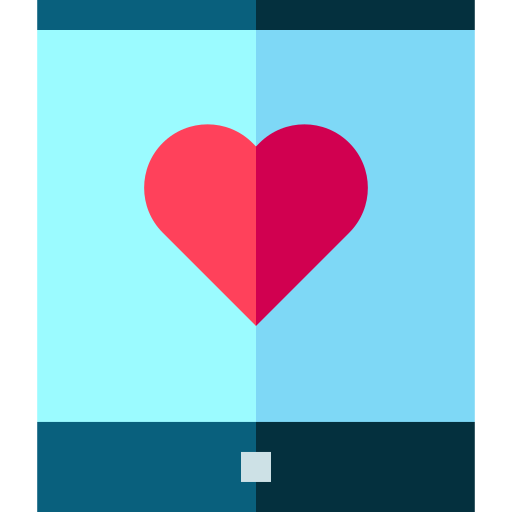

It’s really easy to feel alone and isolated when we are in quarantine. It is okay to feel not okay sometimes. However, we can look at the bright side and realize this is a good opportunity to actually connect more with our loved ones. Spend more quality times with your family, call your grandparents, write a letter to a friend you have not seen for a while…

Hopefully some of these articles and courses can help!